~MI NIÑEZ ~
---------------------------------------------------------------------------------------------------------------------------------------------------------------------------------------------------------------------
Mi niñez fue una etapa muy bonita de mi vida fue cuando empecé a conocer personas nuevas ya que fue cuando entre al kínder, recuerdo una
anécdota muy bonita de cuando me fueron a inscribir, andaba jugando con unos niños y me encontré con una niña que se llama Kenia, nos sorprendimos mucho
porque traíamos puesto casi el mismo tipo de ropa, un capri rosa y una blusa igual rosa, desde ese día nos hicimos muy amigas.
Otra de la situaciones que hizo mi infancia muy agradable fue el nacimiento de mi hermano el 25 de Junio de 2002, él se llama
Sergio Jesús Gabriel Rodriguez Gamez. Nació dos meses antes de mi cumpleaños por lo tanto para mi fiesta de seis años él estaba muy chiquito.
En mi fiesta use un vestido blanco con detalles lilas.
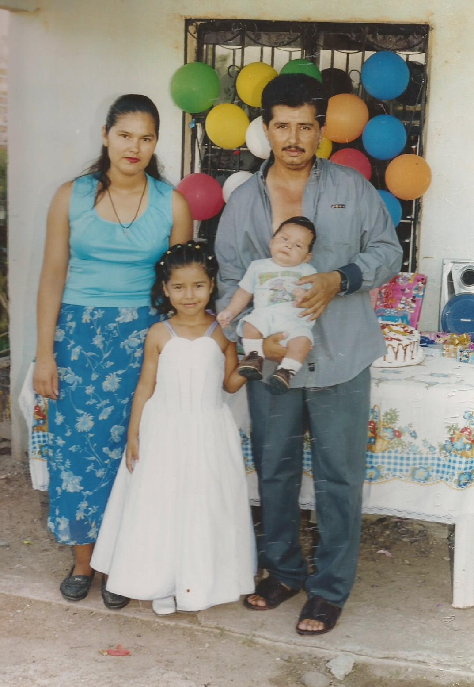
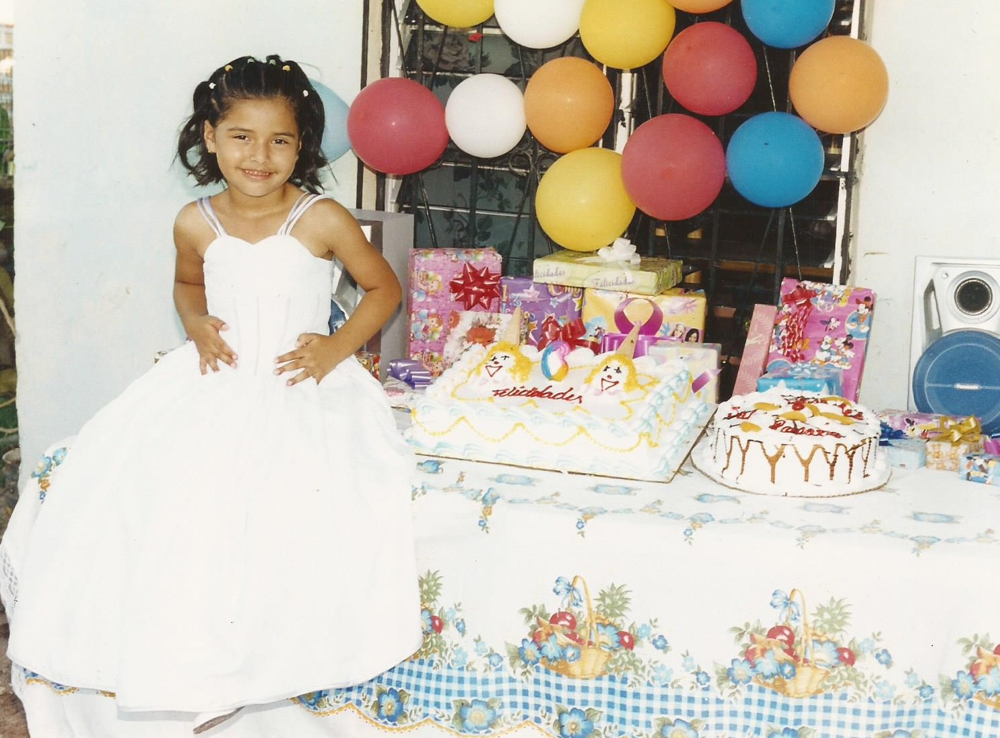
En mi cumpleaños número siete no tuve piñata, pero hay una historia para ello, como lo mencione en mi infancia mi mamá y mi papá hacían
las piñatas para cada una de mis fiestas de cumpleaños, pero en mi cumpleaños número seis me enoje mucho porque mi mamá no me quería comprar una
piñata del personaje Kity que es una gatita con un vestido rosa, cuando mire la piñata me gustó mucho y llore por la piñata y le dije a mi mamá que las
piñatas que me hacía estaban muy feas que nunca me gustaban (cosa que no era cierto, solo lo dije porque estaba enojada) que una chilindrina que me había hecho
el año anterior le había quedado fea y que no quería ninguna piñata de las que ella me hiciera, para que se me quitara el enojo me compro la piñata de kity
y me dijo: “al siguiente año no vas a tener fiesta” y me lo cumplió, no me hizo fiesta de cumpleaños solo me compro un pastel. Abajo les dejo la foto de la
piñata por la cual no tuve fiesta de siete años.
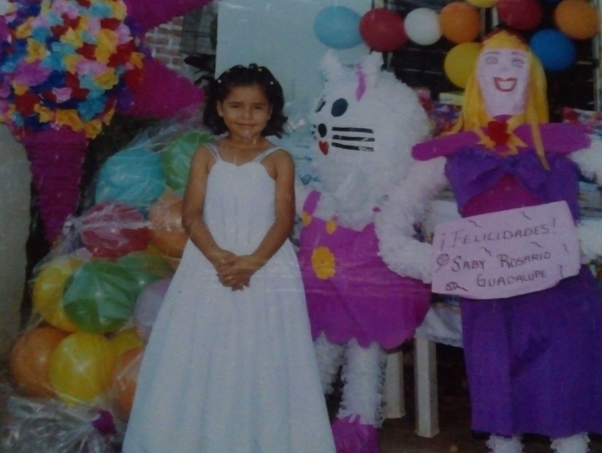
A los siete años no tuve piñata pero pasaron cosas importantes en mi vida. Una de ellas fue que realice mi confirmación el día
23 de mayo del 2004, mi madrina fue Patricia Fierro. La confirmación se llevó a cabo en la parroquia de Nuestro Señor del Perdón en Ruiz Cortines.
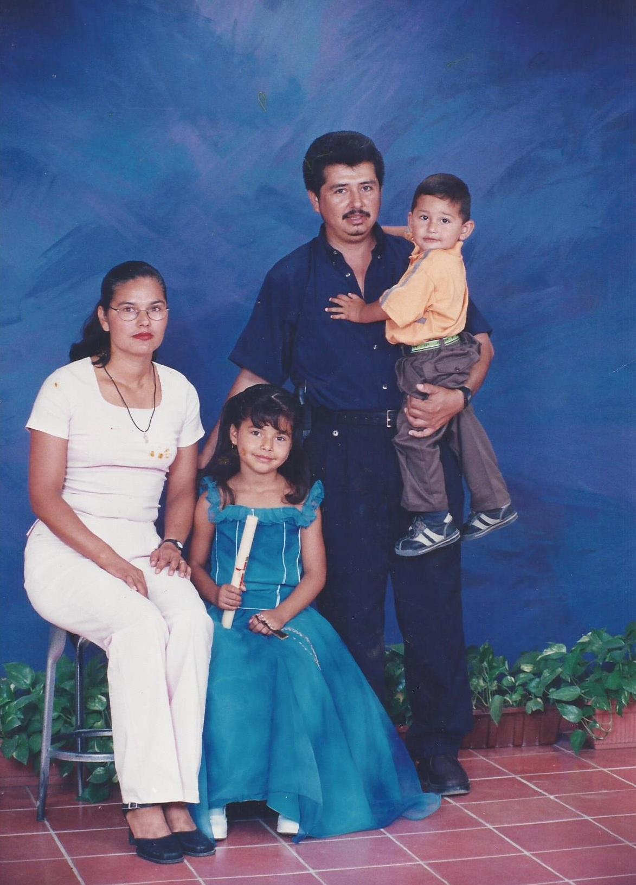

Un poco antes de cumplir los 8 años de edad fuimos de vacaciones a Bacubirito Sinaloa de Leyva a visitar a mis bisabuelos.
En ese viaje conocí la presa de Bacurato. También fuimos al rio, recuerdo que yo no me quería meter al agua pero
quería que me tomaran una foto y mi mamá me dijo que si quería la foto me metiera al agua, pero estaba muy helada el
agua del rio y le dije que me iba a enfermar y mi mamá se rio y me dijo no te pasa nada metete al agua a eso veníamos a
que se bañaran y divirtieran y pues me metí al agua porque quería una foto.
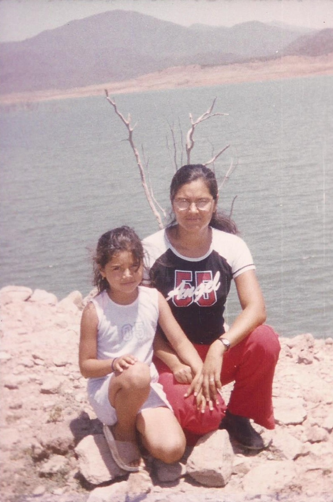
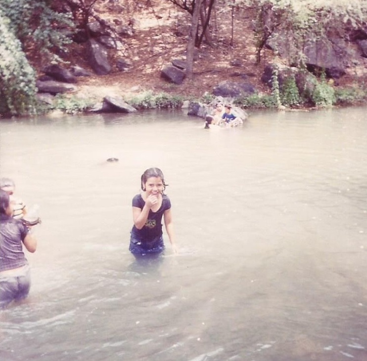
En mi cumpleaños número ocho si tuve fiesta, me levantaron el castigo, pero fue la última vez que me festejaron mi cumpleaños con piñatas,
porque dijeron mis papás que ya estaba muy grande para seguir teniendo piñatas. Mi fiesta fue con el tema de la Bella Durmiente y traía un vestido
amarillo puesto.
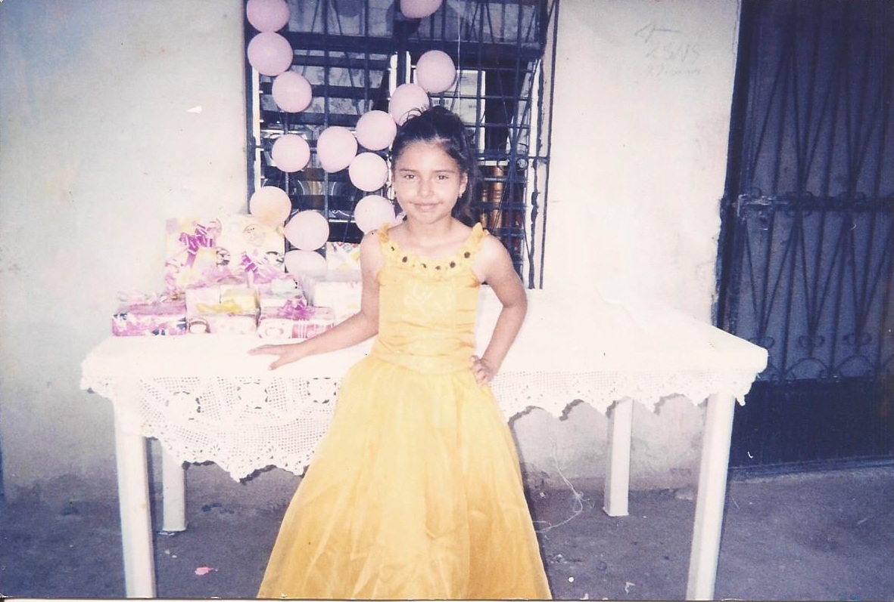
A los nueve años de edad hice mi primera comunión en la iglesia que se encuentra en Ruiz Cortines. Mi madrina fue Elva ella es una amiga de
mi mamá desde que estaban chiquitas. Casi no la frecuento porque vive lejos de aquí. Recuerdo que ese día al salir de la iglesia nos fuimos a
comer a la cuidad de Los Mochis, llegamos a la Ley las palmas a comprar cosas para comer en el parque y a mi madrina se le atoro un tacón de las zapatillas
en unas rejas que había en el piso y batallamos mucho para poder sacar la zapatilla porque mi madrina tuvo que quitársela para no caerse.
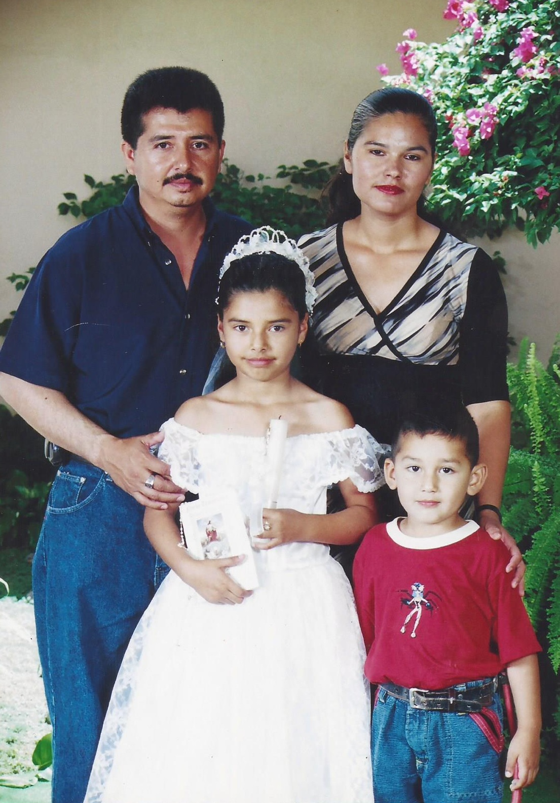
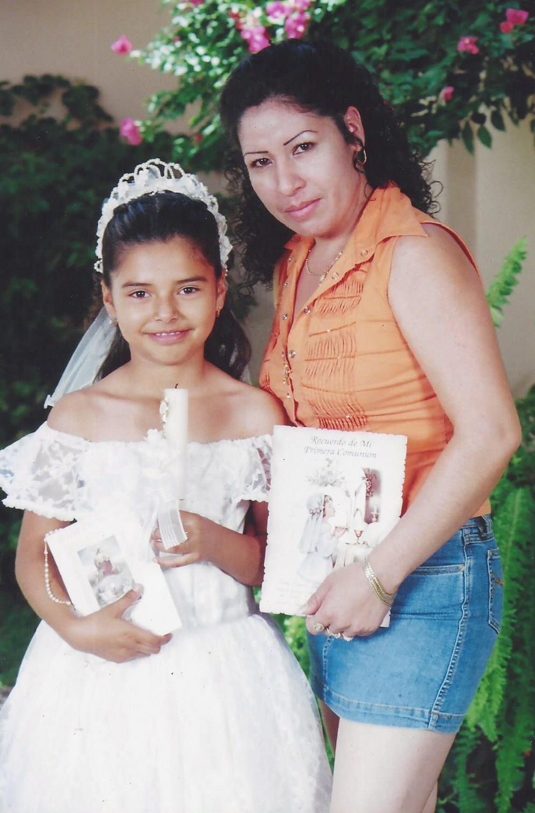
No tengo muchos recuerdos de mis 10 años de edad pero encontré una foto en la que salgo posando, mi mamá me conto que ese día fue la
fiesta de mi hermano y le pedía que me tomara una foto pero ella andaba muy ocupada con los preparativos, hasta que la convencí y me tomo la foto,
a los 11 años me hicieron una cena con mis primos, amigos y vecinos. Casi en todos mis cumpleaños me empujaban en el pastel y esa vez no fue la excepción.
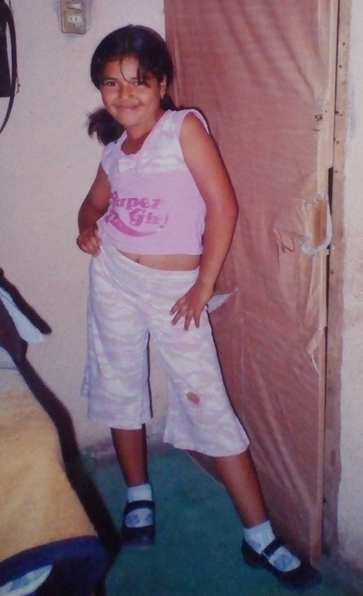
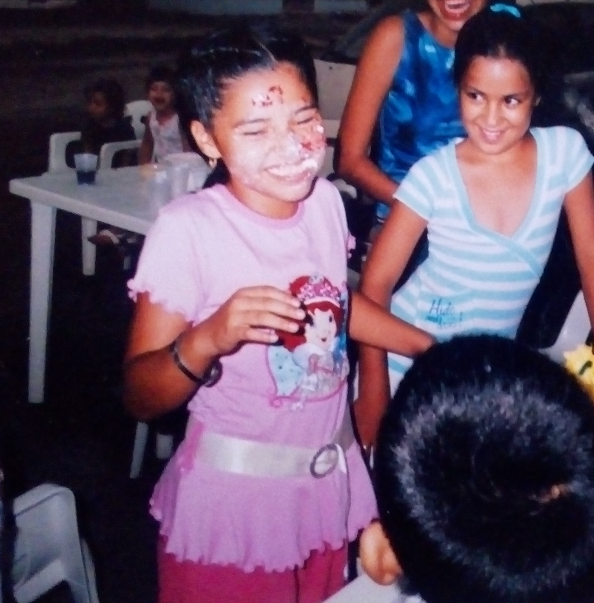
Inicio |
Familia |
Infancia |
Adolescencia
Metas y Filosofía de vida |
Estudios |
Gustos
© SRG Productions ™